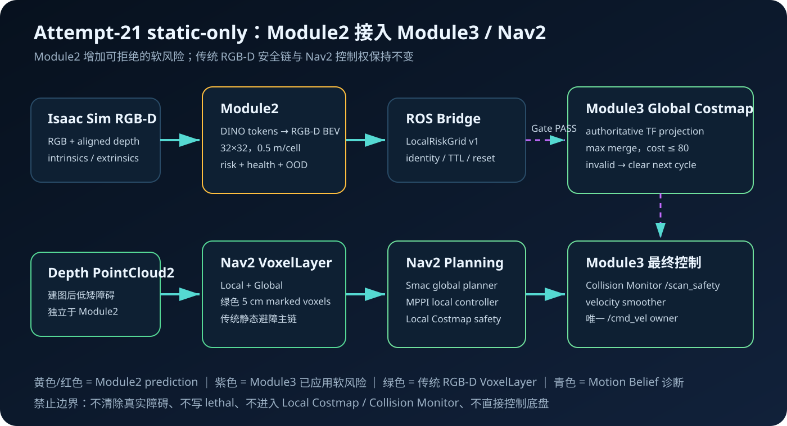
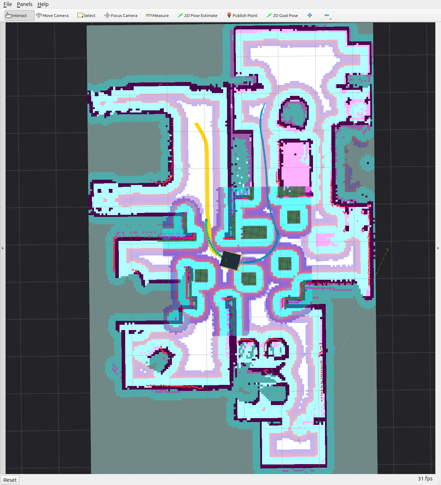
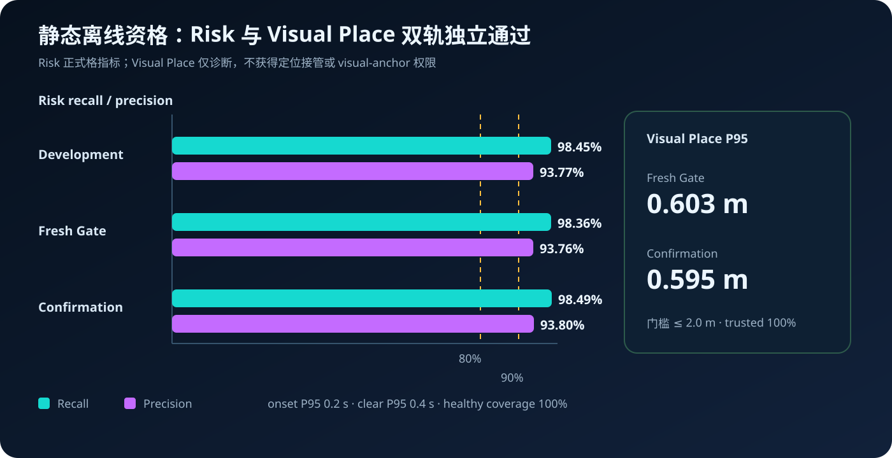
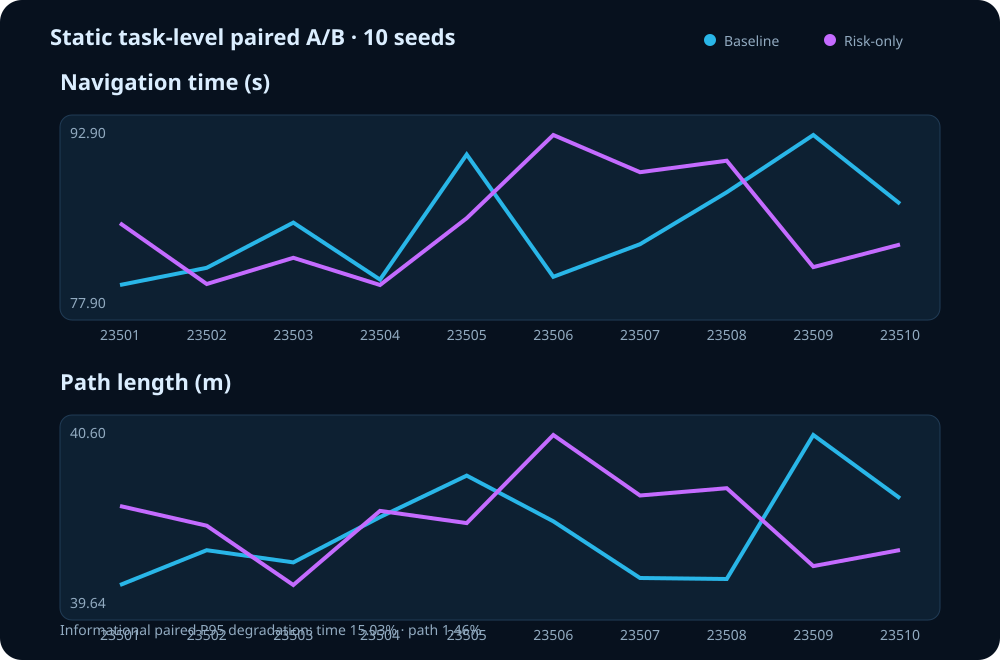
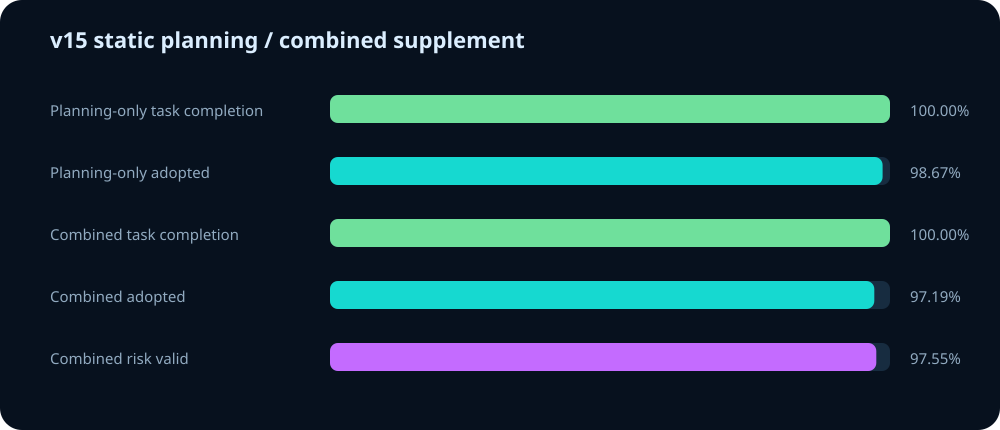

Module2 如何接入 Nav2，
并帮助识别未建图低矮障碍
本报告展示 RGB-D BEV risk 从 Module2 预测、经过身份与健康 Gate、投影到 Module3 Global Costmap，再由 Nav2 规划和控制的完整链路。传统 RGB-D VoxelLayer 始终保留，Module2 只增加非致命软代价，不接管定位、安全或 /cmd_vel。
结论概览
接入结构
RGB、对齐 depth、标定、pose delta
RGB-D lift → BEV → causal risk
LocalRiskGrid + health/OOD/identity
TF 投影，max merge，cost ≤ 80
Smac + MPPI + safety + cmd_vel
传统低障碍检测主链
独立 /scan safety
路线完成 + ContactSensor + timeout

关键安全边界：Module2 无效、超时、OOD、TF/identity 不一致时下一周期清零；它不能清除 voxel/static/LiDAR 障碍，不能写 lethal cost，也不进入 Local Costmap、Collision Monitor 或直接发布速度。
与用户指定 Module3 基线 9124afd 的关系
| 链路 | 9124afd 静态配置 | Attempt-21 v12 |
|---|---|---|
| Local RGB-D VoxelLayer | 保留 | 保留 |
| Global RGB-D VoxelLayer | 保留 | 保留 |
| Collision Monitor | 仅 LiDAR `/scan` | 仅自滤波低延迟 `/scan_safety` |
| Module2 风险 | 无 | 只增加 Global cost ≤ 80 |
| 最终控制权 | Module3 / Nav2 | 仍为 Module3 / Nav2 |
RViz 分层语义

Combined 联合画面：左侧 Isaac Sim 显示六个建图后加入的低矮障碍；右侧 RViz 同时显示全局/局部路径、Module2 risk、Costmap 写入与 SR 状态。
Combined Isaac Sim + RViz 演示视频
H.264/AAC，960×544，约 33.73 秒。媒体链接绑定公开仓库 commit 29c1ec5，复制报告到其他电脑后仍可联网播放。直接打开视频
三组状态文字默认隐藏，避免遮挡路线与障碍；详细 applied/fallback 原因仍由 ROS topic 和 append-only receipt 保存。
传统 RGB-D 静态避障链的现场画面

深绿色小方块是 Nav2 VoxelLayer 标记的低矮障碍；黄色线为全局计划、蓝色线为局部执行路径。该画面取自 v11 pilot 23402，仅用于解释同一传统体素链，不冒充 v12 正式 A/B 截图；它证明相机体素链在工作，不等同于 Module2 风险已经应用。
离线资格数据

| 阶段 | Risk recall | Risk precision | Visual place P95 | 结论 |
|---|---|---|---|---|
| Development finalist | 98.45% | 93.77% | 开发校准独立轨 | PASS |
| Fresh Gate v5 | 98.36% | 93.76% | 0.603 m | PASS |
| Fresh Confirmation v5 | 98.49% | 93.80% | 0.595 m | PASS |
| 阶段 | Static FP cells | Static FP frames | 最长连续误报 | Onset / Clear P95 | Healthy |
|---|---|---|---|---|---|
| Fresh Gate v5 | 0.0221% | 0.5105% | 2 帧 | 0.2 / 0.4 s | 100% |
| Fresh Confirmation v5 | 0.0212% | 0.4670% | 2 帧 | 0.2 / 0.4 s | 100% |
静态阶段的 onset/clear 不是动态 actor 开始/停止运动，而是机器人移动时，未建图静态障碍进入局部可见风险区域和离开该区域后的因果响应：Gate 与 Confirmation 的 onset P95 均为 0.2 s，clear P95 均为 0.4 s。
四臂在线静态结果
| Arm | Planning | Risk | 完整路线 | ContactSensor | 时长中位数 | 路径中位数 | Planning adopted | Risk valid |
|---|---|---|---|---|---|---|---|---|
| Baseline | 关闭 | 关闭 | 10 / 10 | 0 | 81.25 s | 39.91 m | — | — |
| Risk-only | 关闭 | 开启 | 10 / 10 | 0 | 83.33 s | 40.07 m | — | 97.76% aggregate |
| Planning-only | 开启 | 关闭 | 10 / 10 | 0 | 81.11 s | 39.93 m | 98.67% | — |
| Combined | 开启 | 开启 | 10 / 10 | 0 | 84.17 s | 39.90 m | 97.19% | 97.55% |
四组均为每臂 10 条接受路线。Baseline/risk-only 来自 v13 的 23501–23510；planning-only/combined 来自 v15 的 23601–23610，因此这张表用于统一展示，不冒充同 seed 四臂统计显著性检验。

冻结 v12 在 23505/risk-only 完成五段路线后，因 SAT 最大重叠 26.10 mm 超过旧 10 mm 阈值正确 fail-stop。v13 不回写该 receipt，而是按本阶段任务口径把 Isaac ContactSensor 与 SAT 分字段：完整导航流程完成、无卡死/timeout 且 ContactSensor 0 次即通过；间隙大小和 SAT 数值不单独否决。最终 10 对路线全部完成，风险有效覆盖 97.76%，1429 个周期实际施加；SAT 最大 2.31 mm 仅公开为诊断。v13 是 engineering task-level PASS，不冒充 v12 formal PASS。
Planning-only 与 Combined 静态补充

v15 使用全新 23601–23610，继续保留 Local/Global RGB-D VoxelLayer。Planning-only 导航时间/路径中位数为 81.11 s / 39.93 m；Combined 为 84.17 s / 39.90 m。planning adopted/fallback 与 risk applied 分别按 topic 统计。该补充为 engineering diagnostic，不自动扩大 active authorization。
20 条接受路线中只有一次允许的重试：23604/combined attempt-1 因 follow_path action 回执时序提前 aborted，但 ContactSensor 未触发，控制器随后记录到达；原失败证据保留，attempt-2 完成任务。另有首条 planning-only 的审计消息 identity 显示问题，已在不改变导航行为的情况下修复，后续路线均发布实际采用的 SR 身份。
当前文档与一键复现
bash /home/lyb/Workspace/Bio_Nav/repos/Bio_Nav_Integration/scripts/run_attempt21_static_visual_experiment.sh combined将模式替换为 baseline、risk-only、planning-only、static-opt-in；使用 all 会按 baseline → risk-only → planning-only → combined 顺序运行同一个 run-index，并生成一份四臂 JSON/Markdown 对比。入口默认要求 Isaac GUI；若已有 headless 实例会先明确退出，不再静默复用。该入口是人工工程可视化，不改写冻结实验。
授权范围
已验证
显式可用
bio_nav_rgbd_risk_static_opt_in 已绑定模型与 qualification SHA；仅在操作者显式选择时启用。仍不授权
v16 delivery 为 STATIC_TASK_STAGE_PASS，formal result 为 NOT_APPLICABLE。profile 保留 Global RGB-D VoxelLayer，只叠加最大 cost 80 的 Module2 风险；stable、dynamic_avoidance、Collision Monitor 和速度控制均未修改。